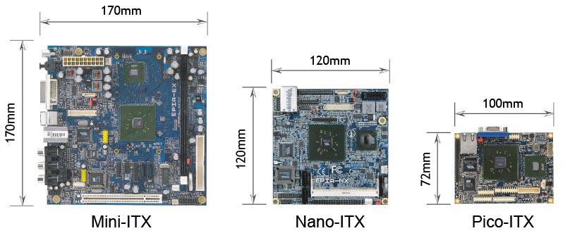
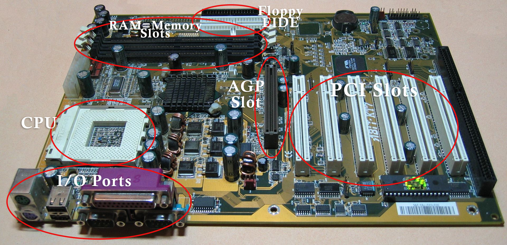

Here are the basic motherboard types (form factors). Select carefully since this is one part of the computer you will not be able to upgrade later.
There are only three motherboard form factors you will likely come across. The ATX, MicroATX, and Mini-ITX.
There are others but they are less common and not as useful for our purpose
Keep in mind that different motherboard form factors are meant to fit into certain cases. The first rule is that the case cannot be smaller than the motherboard. Also, you will see holes for screws in your motherboard and correlating holes in the case. Often a case will be able to accommodate more than one form factor, however. Therefore it will have more holes than you need for your motherboard.
Let’s take a closer look at what is on a motherboard:
The CPU socket is where you put the CPU. This is your computer’s “brain” and is often one of the more expensive pieces to buy. It is square and has many pins which fit into the small holes as it is placed firmly in the motherboard.
You will have anywhere from two to eight RAM slots. Make sure your motherboard can accommodate the amount of RAM you want if you plan to do a lot of video production, gaming, or certain business software. Also keep in mind there are different types of RAM, so you will need to read the manual that came with your motherboard to make sure you get the right kind.
PCI slotscome in several types, but they are a fast connection for many cards, such as networking, sound, and sometimes video. Make sure you have enough for what you want to add to your computer.
At the top of the diagram, you will see a black floppy disk port (something few people add anymore) and two EIDE ports. Here you plug in your hard drives. The motherboard above can take up to two hard drives. Some can take many more.
Just because your motherboard has room for two hard drives does not mean your case has a place for them. For such reasons some people buy a barebones setup where the motherboard is already installed and there is no guess work.
Finally we have the I/O ports. In the motherboard above, you get mouse and keyboard connections (mostly an old style), two USB ports, and a printer port. For your convenience these have been built into this motherboard, but that is not always the case. Sometimes more PCI cards must be bought to fill these needs. Some motherboards even have built-in video.
You may have noticed a large black slot on the far right. You will seldom find this on modern motherboards. It is called an ISA slot. Mostly PCI slots have replaced this outdated feature.